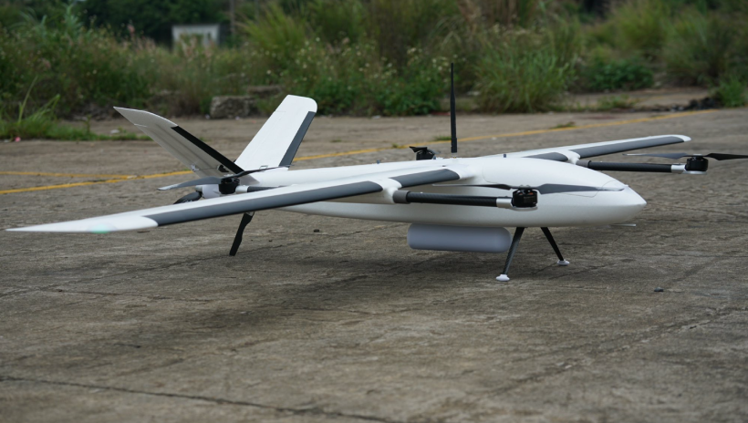
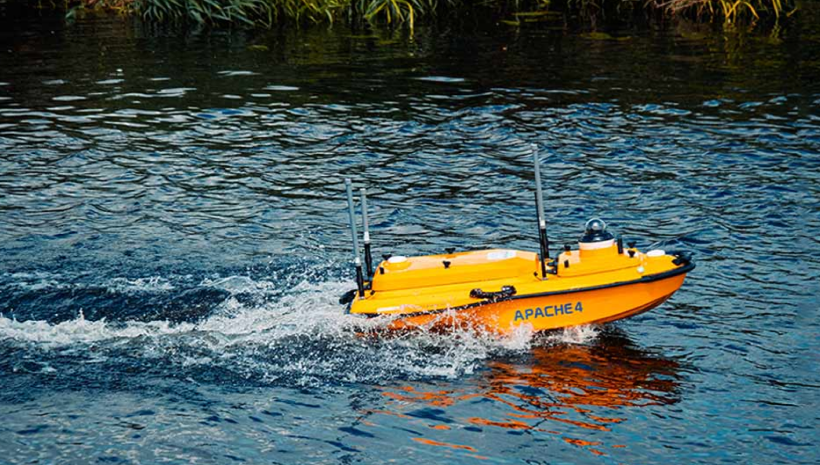
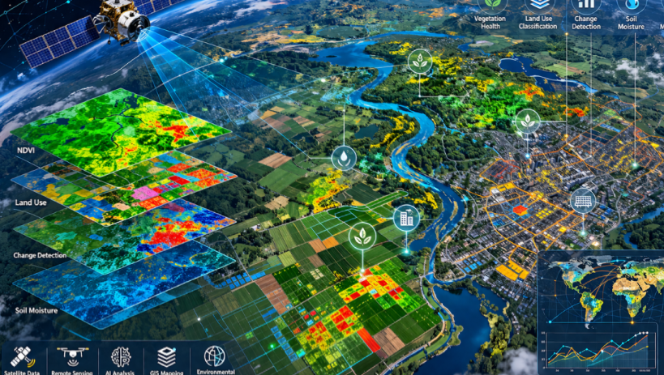

Jasa Survei & Pemetaan
Geospasial Profesional
Kami menghadirkan teknologi survei terkini — LiDAR, UAV, GNSS, Batimetri, dan GIS — untuk mendukung project konstruksi, pertambangan, kehutanan, kelautan, dan infrastruktur nasional dengan akurasi tinggi.
Survei LiDAR
Pemetaan menggunakan teknologi Light Detection and Ranging untuk menghasilkan point cloud beresolusi tinggi. Cocok untuk pemetaan topografi, koridor jalan, dan detail bangunan dengan akurasi vertikal ±5 cm.
-
LiDAR Airborne (UAV & pesawat udara)
-
LiDAR Terrestrial (TLS — 3D scan gedung)
-
DTM / DSM / CHM Processing
-
Point cloud density hingga 100 pts/m²

Fotogrametri UAV
Pemotretan udara menggunakan drone berkamera metrik beresolusi tinggi untuk menghasilkan orthofoto, model elevasi digital (DEM), dan model 3D terrain secara efisien dan ekonomis.
-
Orthofoto resolusi tinggi (GSD 2–5 cm)
-
Digital Terrain & Surface Model (DTM/DSM)
-
3D Dense Point Cloud & Mesh Model
-
Perhitungan volume & timbunan stockpile
Survei GNSS / GPS
Penentuan posisi geodetik menggunakan receiver GNSS multi-konstelasi dengan metode Real-Time Kinematic (RTK) dan Post-Processing Kinematic (PPK) untuk ketelitian posisi hingga ±2 cm.
-
Akurasi horizontal ±2 cm metode RTK
-
Pengukuran titik GCP untuk UAV & LiDAR
-
Jaringan kontrol horizontal & vertikal
-
Multi-konstelasi GPS/GLONASS/BeiDou

Pemetaan Batimetri
Survei kedalaman perairan menggunakan single dan multibeam echosounder untuk mendukung project reklamasi, pengerukan pelabuhan, dan studi sumber daya kelautan serta oseanografi.
-
Single & multibeam echosounder
-
Peta kontur kedalaman laut & sungai
-
Side scan sonar imaging
-
Peta nautika standar IHO S-57

GIS & Penginderaan Jauh
Analisis dan pengolahan citra satelit multispektral untuk pemetaan tutupan lahan, monitoring lingkungan, dan pembuatan peta tematik berbasis sistem informasi geografis (WebGIS).
-
Klasifikasi tutupan lahan multitemporal
-
Analisis NDVI & indeks vegetasi
-
Pembuatan peta tematik & kartografi
-
Dashboard WebGIS interaktif
Konsultasi Teknis
Tim ahli kami siap memberikan saran profesional untuk perencanaan survei, pemilihan metodologi yang tepat, dan estimasi biaya project pemetaan Anda — dari tahap awal hingga pelaporan akhir.
-
Perencanaan metodologi survei
-
Estimasi biaya & jadwal project
-
Review data & quality control
Proses Pengerjaan Project
Kami menjalankan setiap project dengan alur kerja terstruktur untuk memastikan kualitas dan ketepatan waktu.
Konsultasi & Perencanaan
Diskusi kebutuhan, penentuan metodologi, dan penyusunan rencana kerja serta estimasi biaya.
Mobilisasi & Survei Lapangan
Pengiriman tim dan peralatan ke lokasi, pelaksanaan pengukuran dan akuisisi data di lapangan.
Pengolahan & Analisis Data
Proses data di studio menggunakan perangkat lunak spesialis dengan quality control ketat.
Pelaporan & Deliverable
Penyerahan laporan teknis lengkap, data spasial, dan produk peta sesuai kebutuhan klien.
Ada Project yang Ingin Didiskusikan?
Hubungi tim kami untuk konsultasi gratis dan penawaran terbaik sesuai kebutuhan project Anda.
Hubungi Kami Sekarang